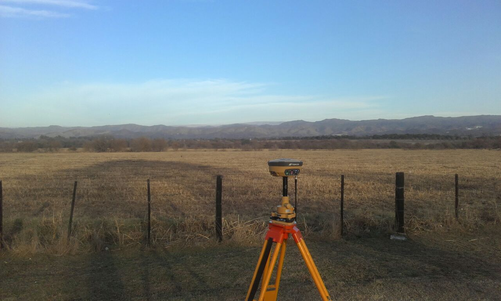
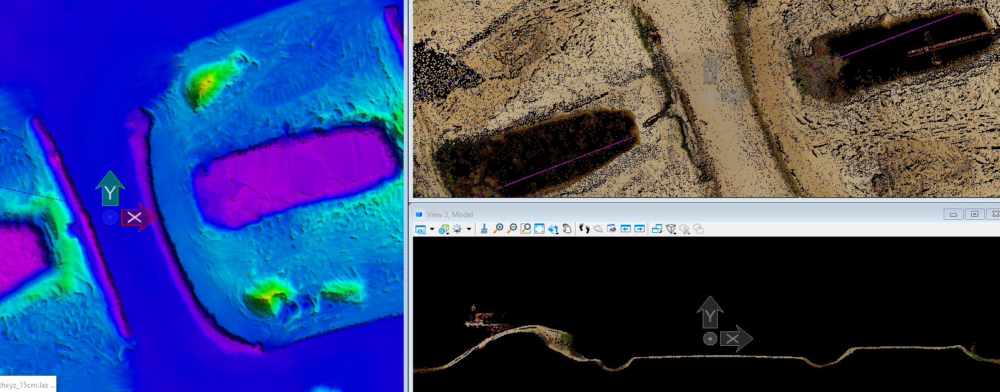
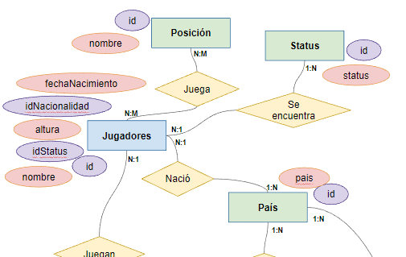
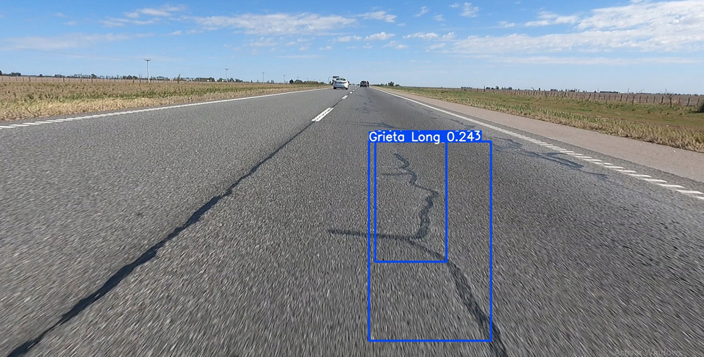
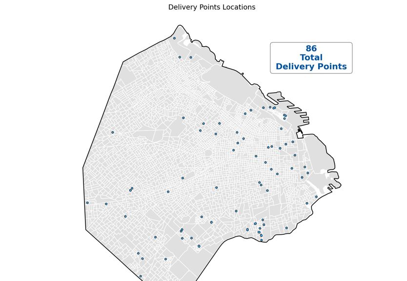

As a Geomatic Engineer, I design solutions to your specific needs, adding value to your projects through the processing and visualization of geographic data. I help obtain and exploit geographic data, improving their decision making process.

Surveying
Scaning and measuring a world, in constant changing and evoution, to reach to you accurate and updated data that helps you improve the solution design and desicion making process.
Geodetic-Topographic Surveys
Hydrographic surveys
Photogrammetric surveys
Drone LiDAR survey
Preparation of Geodetic Networks
Data Processing
Whether the data is structured, images, point cloud, using data analysis and machine learning techniques to generate new information and create insight from it.
Data Exploration (EDA)
Data Cleaning
Data Wranggling
Topographic Data Processing
Point Cloud Processing
Preparation of Plans and 3D Models


Database
Help analyse and create strutured databases, to gather data in a consistent way.
DB design
DB implementation
DB documentation
Geoprocess building
API creation
Frontend forms design
Geodata Analysis
Whether the data is structured, images, point cloud, using data analysis and machine learning techniques to generate new information and create insight from it.
Data Analysis
Data Reports
Machine Learning
Data Visualization
Dashboard Creation


Visualization
"A picture is worth a thousand words". Information shown in charts and maps is more easily procesed, letting you make a better understanding of it. (, Technical Drawing, 3d Models, WebMaps, Dashboards)